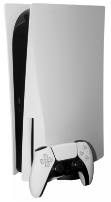
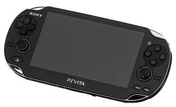

The firstPlaystation console was released in Japan in December 1994, and worldwide the following year.[1] The original console in the series was the first console of any type to ship over 100 million units, doing so in under a decade.[2] Its successor, the Playstation 2 , was released in 2000; it is the best-selling home console to date, having reached over 155 million units sold by the end of 2012.[3] Sony 's next console, the PlayStation 3, was released in 2006, selling over 87.4 million units b March 2017.[4] Sony's next console, the Playstation 4 , was released in 2013, selling a million units within a day, becoming the fastest selling console in history.[5] The latest console in the series, the Playstation 5 , was released in 2020[6] and sold 10 million units in its first 249 days, unseating its predecessor as the fastest-selling PlayStation console to-date.[7] The main series of controllers utilized by the PlayStation series is the DualShock, a line of vibration-feedback gamepads that sold 28 million units by June 2008.[8]
Until 1991, Sony had little direct involvement with the video game industry. The company supplied components for other consoles, such as the sound chip for the Super Famicom from Nintendo , and operated a video game studio, Sony Imagesoft.[20] As part of a joint project between Nintendo and Sony that began as early as 1988, the two companies worked to create a CD-ROM version of the Super Famicom,[21] though Nintendo denied the existence of the Sony deal as late as March 1991.[22] At the Consumer Electronics Show in June 1991, Sony revealed a Super Famicom with a built-in CD-ROM drive that incorporated Green Book technology or CD-i, called "Play Station" (also known as SNES-CD). However, a day after the announcement at CES, Nintendo announced that it would be breaking its partnership with Sony, opting to go with Philips instead but using the same technology .[23] The deal was broken by Nintendo after they were unable to come to an agreement on how revenue would be split between the two companies.[23] The breaking of the partnership infuriated Sony President Norio Ohga, who responded by appointing Kutaragi with the responsibility of developing the PlayStation project to rival Nintendo.[23]
The original PlayStation, released in Japan on December 3, 1994, was the first of the ubiquitous PlayStation series of console and hand-held game devices. It has included successor consoles and upgrades including the Net Yaroze (a special black PlayStation with tools and instructions to program PlayStation games and applications), "PS one" (a smaller version of the original) and the PocketStation (a handheld which enhances PlayStation games and also acts as a memory card). It was part of the fifth generation of video game consoles competing against the Sega Saturn and the Nintendo 64. By December 2003, the PlayStation and PS one had shipped a combined total of 102.49 million units,[29] eventually becoming the first video game console to sell 120 million units.[2]
The PlayStation 5 (PS5)[51] was released worldwide on November 12, 2020, and, alongside the Xbox Series X and Series S released the same month, is part of the ninth generation of video game consoles . The first news of the PS5 came from Mark Cerny in an interview with Wired in April 2019.[52] Sony intends for the PlayStation 5 to be its next-generation console and to ship worldwide by the end of 2020.[53] In early 2019, Sony's financial report for the quarter ending March 31, 2019, affirmed that new next-generation hardware was in development but would ship no earlier than April 2020.[54]
Released in Japan on December 17, 2011 and North America on February 22, 2012,[104] the PlayStation Vita[105] was previously codenamed Next Generation Portable (NGP). It was officially unveiled by Sony on January 27, 2011 at the PlayStation Meeting 2011.[106] The original model of the handheld, the PCH-1000 series features a 5-inch OLED touchscreen,[107] two analog sticks, a rear touchpad, Sixaxis motion sensing and a 4 core ARM Cortex-A9 MPCore processor.
